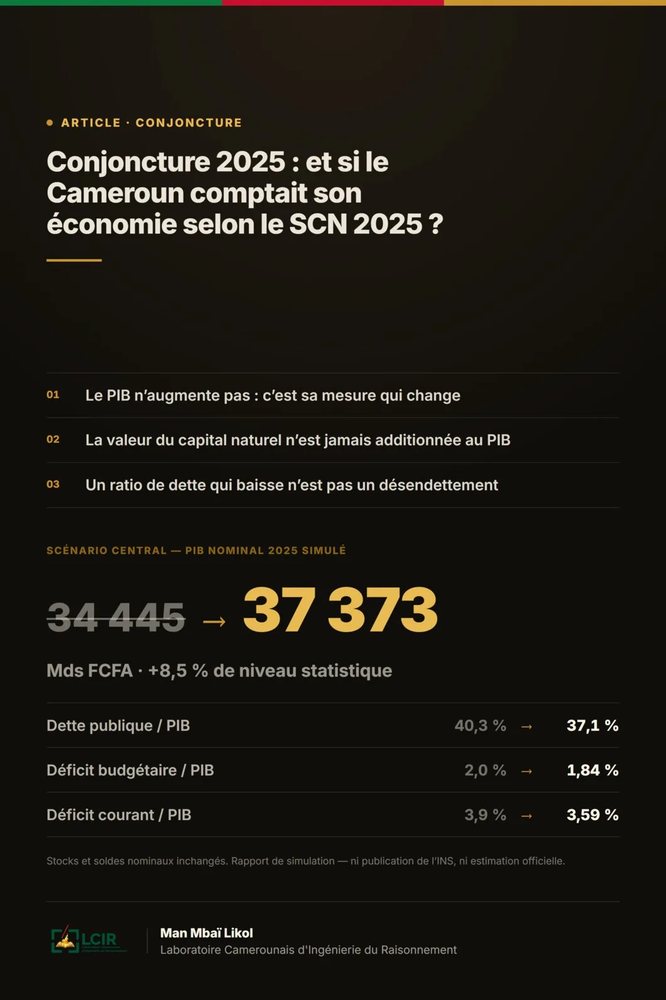

Conjoncture 2025 : et si le Cameroun comptait son économie selon le SCN 2025 ?
Simulation d'une lecture des comptes nationaux camerounais selon le nouveau Système de comptabilité nationale — et de ce qu'elle changerait aux grands ratios.

Une économie statistiquement plus grande n'est durablement plus riche que si elle préserve et renouvelle les actifs qui produisent cette richesse.
Le point de départ : une croissance résiliente, une mesure incomplète
L'économie camerounaise a conservé en 2025 une dynamique positive mais modérée. Le FMI estime la croissance réelle à 3,1 %, l'inflation moyenne à 3,4 %, le déficit courant à 3,9 % du PIB et la dette publique à 40,3 % du PIB. La Banque africaine de développement retient une croissance plus élevée, de 3,7 %, portée par le secteur non pétrolier, l'énergie, la construction, l'agro-industrie et les infrastructures portuaires. Ces divergences illustrent l'incertitude normale entourant les premières estimations annuelles.
Le modèle exposé ici part du PIB nominal 2025 du FMI, soit 34 445 milliards de FCFA, puis applique un pont statistique central de +8,5 %. Le PIB simulé ressort ainsi à 37 373 milliards de FCFA. Cette hausse n'est pas une croissance économique supplémentaire : elle représente l'hypothèse d'une meilleure mesure de la production et des actifs productifs déjà présents dans l'économie.
| Indicateur 2025 | Référence | Simulation SCN 2025 | Lecture |
|---|---|---|---|
| PIB nominal | 34 445 Mds FCFA | 37 373 Mds FCFA | +8,5 % de niveau statistique |
| PIB par habitant | 1 152 803 FCFA | 1 250 792 FCFA | Effet de révision du dénominateur |
| Dette publique / PIB | 40,3 % | 37,1 % | Stock de dette inchangé |
| Déficit budgétaire / PIB | 2,0 % | 1,84 % | Solde nominal inchangé |
| Déficit courant / PIB | 3,9 % | 3,59 % | Solde extérieur nominal inchangé |
| PIB courant (repère Banque mondiale) | 58,93 Mds USD | 63,94 Mds USD | Conversion illustrative |
Source : calculs du modèle à partir du PIB nominal 2025 du FMI.
1. Ce que change réellement le SCN 2025
Le Système de comptabilité nationale 2025, adopté par la Commission statistique des Nations unies en 2025, conserve le cadre théorique fondamental du SCN 2008 mais l'actualise pour la mondialisation, la numérisation, certains enjeux financiers, l'économie informelle, le bien-être et la soutenabilité. Pour les ressources naturelles, les changements incluent une reconnaissance plus explicite des ressources d'énergie renouvelable, une meilleure délimitation des ressources biologiques, l'approche de partage des actifs et le traitement de l'épuisement comme coût de production.
Une conséquence importante est la mise en avant du produit intérieur net, défini comme le PIB diminué de la dépréciation du capital fixe et de l'épuisement des ressources naturelles. Le PIB demeure un agrégat brut : le capital naturel n'est donc pas additionné en bloc au PIB.
L'architecture du modèle simulé
Le modèle retient une approche par « pont statistique » : on part du PIB officiel ou estimé selon le cadre actuel, puis on simule l'effet d'une meilleure couverture de domaines susceptibles d'être sous-mesurés ou reclassés. Les paramètres sont calibrés de manière prudente et ne prétendent pas remplacer les enquêtes de l'INS, les tableaux ressources-emplois, les comptes satellites environnementaux ou les inventaires physiques nécessaires à une véritable migration.
2. La conjoncture réellement observée en 2025
Les estimations disponibles convergent sur une économie résiliente mais dont la croissance reste insuffisante pour transformer rapidement le revenu par habitant. Le FMI estime la croissance réelle 2025 à 3,1 %, contre 3,5 % en 2024 ; la BAD à 3,7 %. Le secteur non pétrolier reste le principal soutien de l'activité, alors que l'extraction pétrolière recule.
| Indicateur | 2024 | 2025 | Source |
|---|---|---|---|
| Croissance réelle du PIB | 3,5 % | 3,1 % | FMI, estimation 2026 |
| Croissance réelle du PIB | 3,5 % | 3,7 % | BAD, perspectives 2026 |
| Croissance du PIB pétrolier | −9,7 % | −7,2 % | FMI |
| Croissance du PIB non pétrolier | 3,8 % | 3,3 % | FMI |
| Inflation moyenne | 4,5 % | 3,4 % | FMI / BAD |
Les moteurs sectoriels
La BAD attribue la dynamique 2025 au secteur non pétrolier, avec l'entrée en puissance de Nachtigal (+420 MW), la construction, les industries agroalimentaires et l'activité portuaire à Kribi. Elle relève une hausse de 333,3 % du trafic de conteneurs sur le nouveau quai du port de Kribi et une progression de 15,5 % de l'investissement public. À l'inverse, la production pétrolière aurait reculé de 8,82 %.
Prix, demande et conditions monétaires
L'inflation moyenne est revenue à 3,4 % en 2025. Ce reflux améliore le pouvoir d'achat réel par rapport au pic inflationniste antérieur, mais les conditions monétaires régionales restent contraignantes : le FMI note que la BEAC a relevé son taux directeur à 4,75 % en décembre 2025, dans un contexte de pression sur les réserves régionales.
3. La réestimation du PIB sous le modèle SCN 2025
Le PIB nominal de référence retenu est de 34 445 milliards de FCFA. Le scénario central ajoute 8,5 % au niveau mesuré, soit 2 928 milliards de FCFA de production statistiquement reconnue en plus. Le PIB simulé atteint donc 37 373 milliards de FCFA.
| Scénario | Révision de niveau | PIB simulé 2025 | Écart vs référence |
|---|---|---|---|
| Prudent | +4,5 % | 35 995 Mds FCFA | +1 550 Mds FCFA |
| Central | +8,5 % | 37 373 Mds FCFA | +2 928 Mds FCFA |
| Étendu | +13,0 % | 38 923 Mds FCFA | +4 478 Mds FCFA |
Le scénario central ne suppose pas que l'économie a réellement produit 8,5 % de plus en 2025. Il suppose qu'une migration statistique complète, accompagnée d'enquêtes améliorées et de nouveaux registres, ferait apparaître une assiette économique plus large. La plus grande contribution hypothétique provient de l'informel, puis du numérique, des ressources biologiques et renouvelables, et des actifs intellectuels.
Le PIB par habitant
Avec une population 2025 de 29 879 337 habitants (Banque mondiale), le PIB nominal par habitant passe mécaniquement d'environ 1 152 803 FCFA à 1 250 792 FCFA dans le scénario central. En prenant pour repère le PIB courant 2025 de la Banque mondiale (58,93 milliards USD), la même révision statistique donnerait environ 63,94 milliards USD, soit près de 2 140 USD par habitant.
4. Capital naturel : richesse, flux et soutenabilité
Le capital naturel est central pour le Cameroun, mais il faut distinguer trois objets : le stock patrimonial de ressources, inscrit au bilan lorsqu'il répond aux critères d'actif ; les flux de production marchands et imputés qui entrent dans le PIB ; l'épuisement, qui réduit le produit intérieur net.
Les travaux de la BAD sur le capital du Cameroun ont mis en avant l'importance du capital naturel dans la richesse nationale. Cette information justifie la mise en place de comptes physiques et monétaires détaillés pour les forêts, les ressources minières et énergétiques, les terres, l'eau et les ressources biologiques. Elle ne justifie pas l'addition de la valeur de ces stocks au PIB annuel.
| Agrégat | Montant simulé | Interprétation |
|---|---|---|
| PIB brut SCN 2025 | 37 373 Mds FCFA | Production brute simulée |
| Dépréciation du capital fixe | 3 924 Mds FCFA | Hypothèse : 10,5 % du PIB |
| Épuisement des ressources | 822 Mds FCFA | Hypothèse : 2,2 % du PIB |
| Produit intérieur net | 32 626 Mds FCFA | PIB − dépréciation − épuisement |
Ces taux sont des hypothèses analytiques : le produit intérieur net présenté ici est une sensibilité méthodologique, non une estimation du Cameroun.
5. Finances publiques et dette après révision du dénominateur
Une révision du PIB modifie plusieurs ratios de soutenabilité sans modifier les stocks nominaux. C'est un effet statistique important, mais il ne supprime ni les besoins de trésorerie ni les échéances de dette. Le FMI estime la dette publique à 40,3 % du PIB en 2025 et maintient une appréciation de risque élevé de surendettement, en raison notamment des vulnérabilités de liquidité.
| Indicateur | Base 2025 | Avec PIB SCN 2025 simulé | Effet |
|---|---|---|---|
| Stock de dette implicite | 13 881 Mds FCFA | 13 881 Mds FCFA | Inchangé |
| Dette / PIB | 40,3 % | 37,1 % | −3,2 points |
| Déficit budgétaire nominal | 689 Mds FCFA | 689 Mds FCFA | Inchangé |
| Déficit budgétaire / PIB | 2,0 % | 1,84 % | Dénominateur plus élevé |
6. Le secteur extérieur
Le FMI estime que le déficit courant s'est creusé à 3,9 % du PIB en 2025, contre 3,3 % en 2024, en partie sous l'effet de la baisse des recettes d'exportation pétrolières. Dans le modèle central, si le solde nominal extérieur reste inchangé, son ratio au PIB se réduit mécaniquement à environ 3,59 %.
| Indicateur extérieur | Base 2025 | Simulation avec nouveau PIB |
|---|---|---|
| Déficit courant nominal implicite | 1 343 Mds FCFA | 1 343 Mds FCFA |
| Déficit courant / PIB | 3,9 % | 3,59 % |
| Exportations pétrolières / PIB | 3,3 % | 3,0 % à valeur nominale inchangée |
| Exportations non pétrolières / PIB | 7,8 % | 7,2 % à valeur nominale inchangée |
La lecture économique, elle, ne change pas : le Cameroun doit renforcer ses exportations à plus forte valeur ajoutée, améliorer sa compétitivité logistique et réduire sa dépendance aux importations de biens transformés et d'équipements. La révision statistique du PIB améliore les ratios, mais pas la capacité à générer des devises.
7. Ce que le nouveau modèle ferait mieux apparaître
L'économie informelle
Une meilleure observation des unités informelles, de l'emploi indépendant, du commerce, du transport, de la restauration, de l'artisanat et des services personnels pourrait élargir l'assiette mesurée. Le scénario central attribue 3,2 points de révision à ce seul bloc, première source d'écart.
Le numérique et les données
Le SCN 2025 accorde une attention accrue à la numérisation, aux données, aux plateformes d'intermédiation et aux produits numériques. Pour le Cameroun, le mobile money, les services numériques, les plateformes et la production de données constituent un champ où la mesure statistique peut être sensiblement améliorée.
Les ressources biologiques et renouvelables
Les forêts, ressources biologiques et énergies renouvelables sont mieux articulées avec les comptes patrimoniaux. Le Cameroun dispose ici d'un avantage structurel important, mais la valeur doit être construite à partir d'inventaires physiques, de rentes de ressource et de flux économiques observables — pas décrétée.
Les actifs intellectuels et la production pour compte propre
Logiciels, bases de données, recherche-développement et autres actifs de propriété intellectuelle peuvent être mieux capitalisés lorsque les conditions du SCN sont remplies. Une partie de l'investissement productif peut ainsi être reclassée, plutôt que traitée comme dépense courante.
8. Tableau de bord économique 2025
| Domaine | Indicateur | Valeur | Statut |
|---|---|---|---|
| Activité | Croissance réelle | 3,1 % FMI / 3,7 % BAD | Observé / estimé |
| Activité | PIB nominal | 34 445 Mds FCFA | Référence FMI |
| SCN 2025 | PIB nominal simulé | 37 373 Mds FCFA | Simulation centrale |
| SCN 2025 | Révision de niveau | +8,5 % | Hypothèse |
| Population | Population 2025 | 29 879 337 | Banque mondiale |
| Revenu | PIB par habitant simulé | 1 250 792 FCFA | Simulation |
| Prix | Inflation moyenne | 3,4 % | FMI / BAD |
| Pétrole | Croissance du PIB pétrolier | −7,2 % | FMI |
| Hors pétrole | Croissance du PIB non pétrolier | 3,3 % | FMI |
| Budget | Déficit global | 2,0 % du PIB | FMI |
| Budget | Déficit recalculé | 1,84 % du PIB | Simulation |
| Dette | Dette publique | 40,3 % du PIB | FMI |
| Dette | Dette recalculée | 37,1 % du PIB | Simulation |
| Extérieur | Compte courant | −3,9 % du PIB | FMI |
| Extérieur | Compte courant recalculé | −3,59 % du PIB | Simulation |
| Patrimoine | Produit intérieur net simulé | 32 626 Mds FCFA | Hypothèses de dépréciation et d'épuisement |
9. Diagnostic : forces, fragilités, et l'apport réel du nouveau cadre
Forces
Le Cameroun bénéficie d'une économie relativement diversifiée pour la sous-région, d'un secteur non pétrolier résilient, d'un potentiel agricole, forestier, gazier, minier et hydroélectrique important, ainsi que d'infrastructures structurantes — Nachtigal, le complexe portuaire de Kribi. Une meilleure comptabilité des actifs naturels et numériques renforcerait la visibilité de cette base productive.
Fragilités
La croissance par habitant reste limitée, la production pétrolière décline, les contraintes de financement sont fortes et le risque de surendettement demeure élevé, malgré un ratio de dette modéré en comparaison internationale. Les déficits courant et budgétaire, les arriérés, les goulets d'étranglement énergétiques et les difficultés de mobilisation des recettes non pétrolières restent des contraintes.
Ce que le SCN 2025 apporte vraiment
Le principal apport du nouveau modèle serait moins de « rendre le Cameroun plus riche » que de mieux distinguer production, patrimoine, épuisement et soutenabilité. Il pourrait révéler une économie statistiquement plus large tout en montrant simultanément le coût de la consommation du capital naturel. Le bon indicateur de pilotage deviendrait donc un couple PIB / produit intérieur net, complété par des bilans de richesse et des comptes environnementaux.
10. Perspectives 2026-2031 sous cadre enrichi
Le FMI prévoit un redressement de la croissance à 3,3 % en 2026, puis une accélération graduelle, soutenue à moyen terme par la diversification minière et la réduction des contraintes énergétiques. La BAD est plus optimiste pour 2026-2027. Le cadre SCN 2025 ne modifie pas en lui-même ces taux de croissance : il peut en revanche modifier les niveaux de référence, la composition sectorielle et les indicateurs nets.
| Année | PIB nominal FMI (Mds FCFA) | Niveau simulé SCN 2025 (Mds FCFA) |
|---|---|---|
| 2025 | 34 445 | 37 373 |
| 2026 | 35 915 | 38 968 |
| 2027 | 37 980 | 41 208 |
| 2028 | 40 833 | 44 304 |
| 2029 | 43 736 | 47 454 |
| 2030 | 46 913 | 50 901 |
| 2031 | 50 261 | 54 533 |
11. Huit chantiers pour produire de vrais comptes camerounais
- Construire un tableau de passage officiel SCN 2008 → SCN 2025, avec séries rétropolées pour préserver la comparabilité historique.
- Renforcer le registre statistique des entreprises et l'observation des unités informelles — commerce, transport, services, production domestique marchande.
- Créer un compte satellite de l'économie numérique : plateformes, mobile money, données, logiciels, cloud, commerce électronique et intermédiation numérique.
- Déployer des comptes physiques et monétaires SEEA pour les forêts, l'eau, les terres, les ressources minières, pétrolières et gazières.
- Publier systématiquement PIB brut, produit intérieur net, dépréciation du capital fixe et épuisement des ressources naturelles.
- Établir des bilans nationaux de patrimoine, afin de distinguer richesse nationale, capital naturel, capital produit, capital humain et actifs financiers.
- Recalculer après révision les ratios dette/PIB, recettes/PIB, investissement/PIB et commerce/PIB — tout en conservant les montants nominaux, pour éviter les lectures trompeuses.
- Documenter chaque révision par une note méthodologique publique et des intervalles d'incertitude.
Conclusion : mieux mesurer n'est pas devenir plus riche
Dans le scénario central de ce modèle, une comptabilité camerounaise modernisée et mieux couverte porterait le PIB nominal 2025 de 34 445 à environ 37 373 milliards de FCFA, soit une révision statistique de +8,5 %. Le ratio de dette publique passerait mécaniquement de 40,3 % à 37,1 %, le déficit budgétaire de 2,0 % à 1,84 % et le déficit courant de 3,9 % à 3,59 % du PIB — à stocks et soldes nominaux inchangés.
La conclusion essentielle est toutefois méthodologique. Le SCN 2025 ne transforme pas un stock de forêts, de minerais ou de biodiversité en production annuelle. Il permet de mieux mesurer les actifs, leurs services économiques et leur épuisement.
Pour le Cameroun, l'enjeu est donc double : révéler la partie de l'économie aujourd'hui insuffisamment observée, et mesurer le coût patrimonial de la croissance. Une économie statistiquement plus grande n'est durablement plus riche que si elle préserve et renouvelle les actifs qui produisent cette richesse.
ANNEXE A — HYPOTHÈSES DU MODÈLE
| Paramètre | Valeur | Nature |
|---|---|---|
| PIB nominal 2025 | 34 445 Mds FCFA | FMI |
| Population | 29 879 337 | Banque mondiale |
| Révision — scénario prudent | +4,5 % | Hypothèse |
| Révision — scénario central | +8,5 % | Hypothèse |
| Révision — scénario étendu | +13,0 % | Hypothèse |
| Dépréciation du capital fixe | 10,5 % du PIB simulé | Hypothèse analytique |
| Épuisement des ressources naturelles | 2,2 % du PIB simulé | Hypothèse analytique |
ANNEXE B — LIMITES ET RÈGLES D'INTERPRÉTATION
- Les écarts de +4,5 %, +8,5 % et +13,0 % sont des scénarios, pas des résultats statistiques observés.
- Aucun stock de capital naturel n'est ajouté directement au PIB.
- Les ratios recalculés supposent des numérateurs nominaux inchangés.
- Le produit intérieur net est une sensibilité fondée sur des taux hypothétiques de dépréciation et d'épuisement.
- Les divergences FMI / BAD sur la croissance 2025 sont conservées et signalées, non arbitrées.
- Une estimation officielle exigerait des données microéconomiques, des tableaux ressources-emplois, des comptes de patrimoine et des inventaires physiques.
SOURCES PRINCIPALES
- FMI — Consultation 2026 au titre de l'article IV, rapport pays 26/81
- FMI — Communiqué du 30 mars 2026, principaux agrégats 2025
- BAD — Perspectives économiques au Cameroun
- BAD — Rapport pays 2025, Cameroun
- INS Cameroun — Comptes nationaux 2024
- Nations unies — System of National Accounts 2025
- Nations unies — Guide de mesure des ressources naturelles dans les comptes nationaux
- Banque mondiale — Cameroon Data